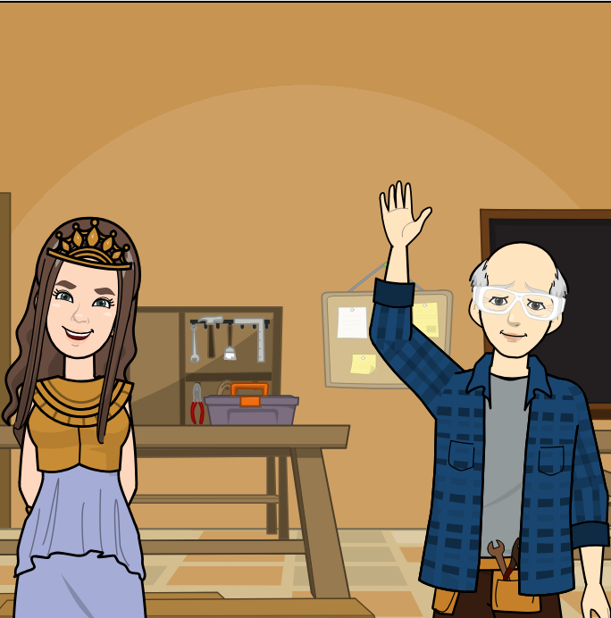
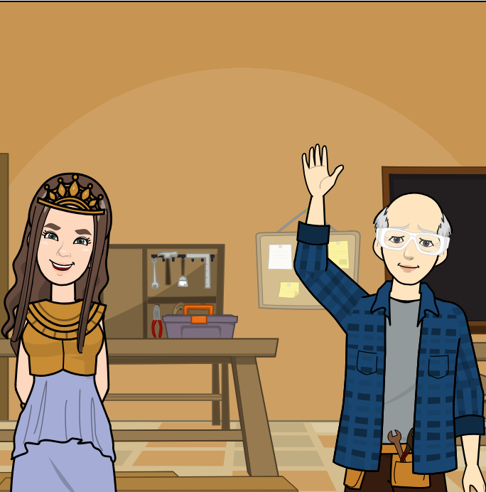

Hola, te presento a mi hermano Hefesto, el dios de la construcción. Él ha creado recursos que te ayudarán a ser un gran lector crítico, y, a su vez a aprender más y mejor. Úsalos, son todos para ti.

Hola, te presento a mi hermano Hefesto, el dios de la construcción. Él ha creado recursos que te ayudarán a ser un gran lector crítico, y, a su vez a aprender más y mejor. Úsalos, son todos para ti.

Revisa la tabla de conectores que ayudarán a que tengas mayor fluidez a la hora de leer y escribir. Yo de ti, le sacaría impresión y la llevaría siempre conmigo. Da clic aquí para mirar la tabla.
Para mejorar tu ortografía puedes seguir estos canales:
https://www.instagram.com/deletreandolo/
Para hacer una búsqueda eficiente en internet puedes buscar información en los buscadores y con los operadores que se muestran en el siguiente video:
Para aprender mejor puedes utilizar las siguientes técnicas a la hora de estudiar.
ténicas de optimización del tiempo de Cristian Alirio Lasso Ardila y Jorge Mario Grijalba Ibarra.
Obra publicada con Licencia Creative Commons Reconocimiento Compartir igual 4.0